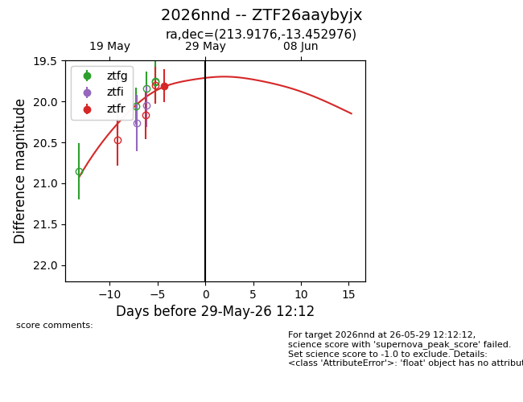
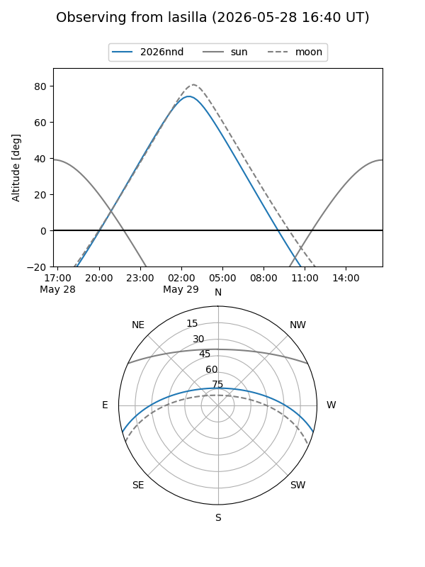
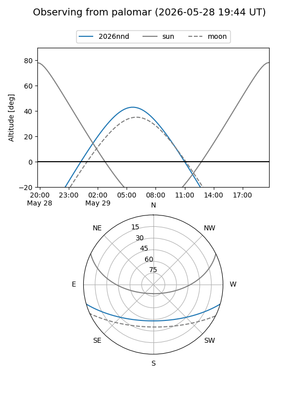
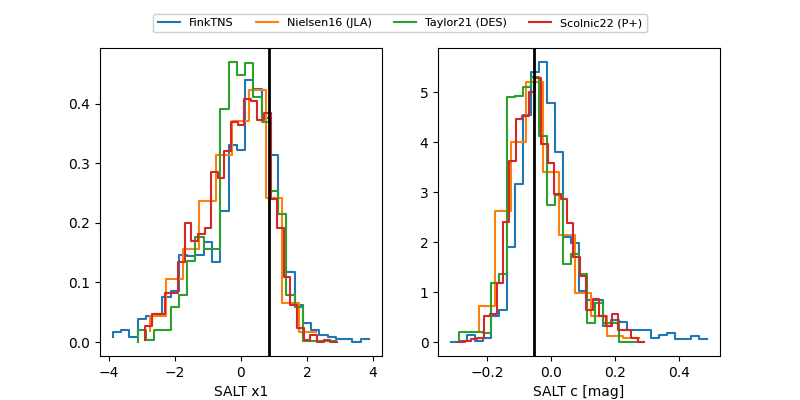

2026nnd
Target 2026nnd at 2026-05-29 12:16
Aliases and brokers:
lsst-FINK: link
lsst-Lasair: link
lsst-ALeRCE: link
ztf-FINK: link
ztf-Lasair: link
ztf-ALeRCE: link
TNS: link
YSE: link
alt names
ZTF26aaybyjx (ztf,fink_ztf)
2026nnd (tns,yse)
Coordinates:
equatorial (ra, dec) = 213.9176,-13.45298
equatorial (HMS+DMS) = 14:15:40.22,-13:27:10.71
galactic (l, b) = (332.3033,+44.56186)
Flags:
TNS confirmed: nan
Photometry:
last ztfr=19.81
1 ztfr detections
Lightcurve

Visibility


Additional plots
